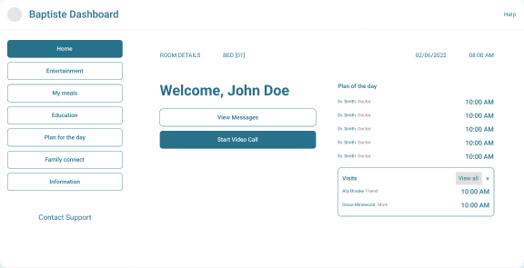
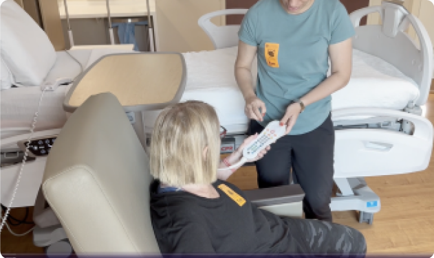
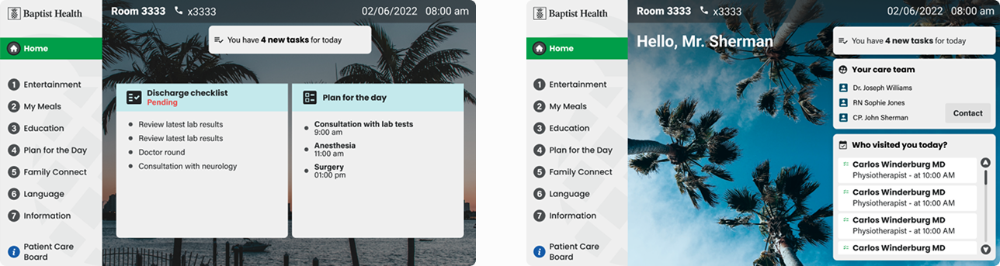
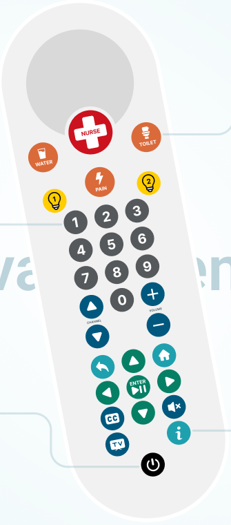

Redesigned the platform to improve usability, accessibility, and patient engagement through a more intuitive and supportive UX.
Timeline
6 months · design thinking
Scope
Research, IA, TV UI, remote control, testing
Sector
Health · B2B · B2C
00 / 06 · Summary
00 · Executive summary6 months · design thinking
A redesign of Baptist Health's Smart Room TV, the in-room system patients use for care info, meals, entertainment, and family calls, so they can do it on their own and nurses get fewer interruptions.
17%
Patient adoption before the redesign (goal: 65–70%)
80%
Staff adoption in the first two weeks after launch
−35%
User errors, with clearer remote and UI
4.2/5
Patient and family satisfaction
Problem
Despite the investment, the Smart Room was hard to use, relied on a confusing remote, and pushed basic tasks to nurses.
Approach
Design thinking over six months: research with patients and staff, system mapping, field testing with 100 people, and a new remote.
Outcome
A simpler, accessible TV experience that patients use independently, with less strain on staff.
Objectives
−30% nurse interruptions.
+50% patient feature use.
+2 points ease of use (7-point scale).
−40% task completion time.
+25% patient satisfaction.
Who the system servesFig. A
My roleProduct DesignerHealth industryAzure DevOps
Step 01 / 05Months 1–2
01
Empathize
GoalUnderstand why the Smart Room failed, combining what users do with why they do it.
Mixed-methods research
Interviews with patients, nurses, and doctors on pain points and emotional drivers.
Platform analytics to find underused features, touchpoints, and drop-offs.
Surveys to a broader base to validate patterns and measure satisfaction.
Synthesis with thematic coding, triangulation, and affinity diagrams.
WORKLOAD
+15%
More workload for medical staff, cutting direct patient care time.
ADOPTION
17%
Patient adoption, far from the 65–70% goal.
Survey · patient informationFig. B
YesNo
Is the platform useful to manage your medical information?
40%60%
Frequent delays accessing your medical records?
88%12%
Does it help you communicate with providers?
28%72%
Hard to find information about your diet?
64%36%
Should it be significantly improved?
83%17%
Satisfied with technical support?
92%8%
Using the system is like solving a maze every time. It's frustrating and confusing.
Emily Rodriguez · Patient
Navigating complex system interfaces requires ongoing training, diverting time from patient care.
GoalName the core problem: the system was too technical, hard to use, and added workload instead of reducing it.
INSIGHT 01
Patients seek autonomy
Many prefer handling basic tasks instead of calling nurses.
INSIGHT 02
Remotes cause frustration
Especially for older adults.
INSIGHT 03
Popular features were hidden
Entertainment and food were the most used, yet hard to reach.
INSIGHT 04
Emotional connection matters
Patients wanted to call or message family from the TV.
Personas · 3 patients and families, 3 medical staff
DR
Diana Robles, 34Mother of a sick child
Pain
Can't find educational content for her child; no personalization.
Solve
Entertainment, education, and quick contact with medical staff.
JN
Javier Nelson, 54Caregiver for his father
Pain
No clear info on how to care for his father or on dietary options.
Solve
Practical caregiving guides and clear health status.
AM
Anya Mikels, 32Nurse
Pain
Slow access to diet and medication; disconnected systems.
Solve
Patient, diet, and medication records in one place.
Journey · scenario: find educational contentFig. C
01 · UNSURENot sure where to start.
02 · CONFUSEDSeveral options; where is education?
03 · LOSTTwo menus, ends up in videos.
04 · FOUND ITBuried in a sub-menu.
05 · ENGAGEDThe video is clear and well-paced.
06 · AUTONOMOUSDidn't need to wait for a nurse.
HypothesisIf we make the Smart Room TV simpler, more intuitive, and structured around patient needs, with clearer labels, hierarchy, and navigation, patients will use it more independently and non-clinical staff workload will decrease.
Key metricsStaff interruptionsFeature adoptionTask timeEase of useSatisfactionSupport requestsOnboarding success
Step 03 / 05Months 3–4
03
Ideate
GoalTurn research into structure: what comes first, how actions reach the hospital, and how the UI stays calm when systems don't.
Research-driven decisions
Simplified interface: less complexity and clearer iconography against cognitive overload.
Prioritized features: entertainment and food ordering made prominent.
Accessibility: larger text, contrast, and simpler flows for elderly users.
System thinking: mapped how each action, like ordering food, flows to kitchens, EMR, and staff.
Information architecture · preview (NDA)Fig. D
Register→Onboarding→Home←Login
PriorityHomeEntertainmentMy mealsFamily connect
Next sprintsEducational contentPlan for the day
ProfileVisitsPreferencesRoom details
Brand#005776 · #2EA84APoppins · PineApp base
Task flow · “As a patient, I want to choose my meals according to my diet”Fig. E
My MealsFrom the TV home
Diet filterOnly doctor-assigned options
OrderAt least 1 hour ahead
ServedAt the doctor's time
Clear status“Your meal is on the way”
FALLBACK
Safe defaults
“Your request is pending” or a manual alert when systems are slow.
ADAPT
Adaptable logic
Flows adjust by room type, wing, or hospital rules.
PRIORITY
Latency-aware
Temperature and lights in real time; surveys can wait.
RECOVER
Retry states
Retry options or “notify staff manually” when something fails.

Mid-fi · concept 02 (validated of 3)Fig. F
Step 04 / 05Months 4–5
04
Prototyping & testing
GoalValidate the redesign in realistic hospital conditions, including the remote control.
How we tested
Figma prototypes replicating the full TV, with directional navigation.
Maze remote tests on meals and content: heatmaps, time on task, completion.
100 participants, patients, visitors, and staff, chosen at random across Baptist hospitals.
Accessibility checks: Stark (WCAG AA), visual impairment simulations, and inclusive sessions.

Field test in a hospital roomFig. G
Task success rateFig. H
97%Know care team
91%Personal info
86%Diagnosis & next steps
92%Medical records
94%New remote features
85%Plan & meals
Before & after testing

Two dense columns → clear hierarchyFig. I
Before
Two full columns: welcome and tips, plus itinerary, alerts, and shortcuts.
Patients couldn't tell sections apart and ignored key items.
After
A short welcome and only today's itinerary, condensed.
Tips and shortcuts moved to sub-sections; calmer and easier to scan.
New remote control
Higher contrast on every button.
Icons over labels, universally recognizable regardless of language.
Direct requests: nurse, water, toilet, and pain.
Accessible by default: labeled icons, large type, captions, and never color alone.

Renovated remoteFig. J
Step 05 / 0515 days
05
Handoff
GoalShip what was designed, adapting to the real limits of TVs and hospital systems.
DOCS
Documentation & training
Specs, flows, and interaction rules in Figma, with training for stakeholders and operations.
FEEDBACK
Feedback integration
Testing insights folded into the final product before handoff.
SUPPORT
Technical support
A team set up for initial queries and ongoing assistance.
Problems found → solutions
TV OS couldn't skip disabled items→Redesigned focus order with native device navigation
Restricted meal APIs→Cached menus and pending-status messages
Video + subtitles lagged on some TVs→Lower default resolution and static fallback content
Trade-offsSimplified some advanced features for stability on legacy hardware, and prioritized meals, entertainment, and communication over less critical functions.
06 · ResultsGradual rollout
06
Clear, enjoyable, informative
OutcomeRolled out gradually across the hospital chain, adjusting with early feedback.
ADOPTION
80%
Of medical and admin staff in two weeks.
RESPONSE
−30%
Nurse response time (pre-launch phase).
LEARNING
90%
Proficient with the platform and remote in 15 min.
SPEED
2×
Faster: assistance 3 → 1.5 min, meals 4 → 2 min.
What the process taught us
01
Collaborate earlyCross-functional work avoids costly redesigns.
02
Constrained devicesDemand creative simplification, not fewer needs met.
03
Accessibility from day oneImproves outcomes for everyone.
04
Test where it's usedReal rooms reveal what prototypes can't.